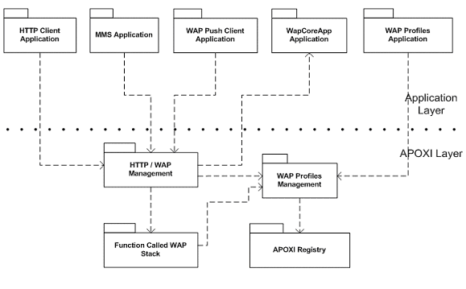

HTTP/WAP Interface Overview
1 Introduction
The access of the internet from mobile applications requires an implementation of the HTTP and WAP protocols and interfaces, which can be used by applications to access these protocols.
HTTP/WAP Interface provides a set of APIs for applications using WAP and HTTP connections while keeping the underlying HTTP or WAP stack vendor independent.
In particular, HTTP/WAP Interface architecture serves the following purposes:
2 Architecture Overview
The following diagram gives an overview of the functional interaction of HTTP/WAP Interface with other modules
of the complete system.
 |
Figure 1. Architecture of HTTPWapInterface
2.1 HTTP Client Application
This is any application, which needs to act as an HTTP client. It accesses HTTP functionality in the HTTP/WAP Management package within APOXI.
2.2 MMS Application
This is another application, which needs HTTP functionality.
2.3 WAP Push Client Application
This is any application, which needs to act as a WAP push client, i.e. it will receive push messages. It accesses WAP functionality in the HTTP/WAP Management package within APOXI.
2.4 WapCoreApp Application
This application implements the WapService interface and acts as a wrapper for a 3rd Party WAP stack. The communication between HTTP/WAP management in APOXI and the WapCoreApp application is via messages in both directions.
2.5 WAP Profiles Application
The purpose of this application is to create, edit and delete WAP profiles. It accesses the WAP profiles by using the WAP Profiles management in APOXI. It works very similar to the existing DataConnApp application used to manage data connection profiles.
2.6 HTTP/WAP Management
This package has the task to initiate, manage and terminate HTTP/WAP connections, to handle HTTP requests and responses and to handle WAP push messages.
2.7 Function Called WAP Stack
This package is any future WAP stack with a function calling interface, as opposed to the message handling interface of WapCoreApp.
2.8 WAP Profiles Management
The task of this package is to create, edit and delete WAP profiles and to make them persistent. The primary classes are WapProfileMgr and WapProfile. It uses the Registry package to make profiles persistent.
2.9 APOXI Registry
This is the storage medium for profile data.
3 Overview HTTP/WAP Interface
This section contains description and usage model of HTTP/WAP interface and WAP Profile Management.
3.1 HTTP/WAP Interface
One of the motivations behind developing the HTTP/WAP interface is that applications do not need to be ported each time the underlying HTTP/WAP stack changes. To meet this goal the design has three major parts:
4 WAP Profile Management
A WAP Profile stores all the parameters required to open a WAP connection. A WapProfile object also holds an identifier of a data connection profile (class DataConnProfile) i.e., the bearer protocol details. WAP Profiles are managed by WapProfileMgr interface implemented by WapProfileMgr class. WapProfileMgr interface provides operations like creation, save, retrieve and deletion of a WapProfile for the applications to make use of it.
The parameters of the WapProfile object are stored in persistent memory and can be retrieved and used for editing. The identifier and the name of all the WAP Profiles are held in a linked list of objects of struct WapProfileInfo. For example, an application that needs the user to select a particular WapProfile can parse through this linked list of WapProfileInfo objects and retrieve the WapProfile name and its mapping identifier. As and when the user selects a particular name, then its corresponding profile id can be passed to the method which opens a WAP connection. WAP Profile Management is a library which can be used by an upper layer application to manage the WAP Profiles.